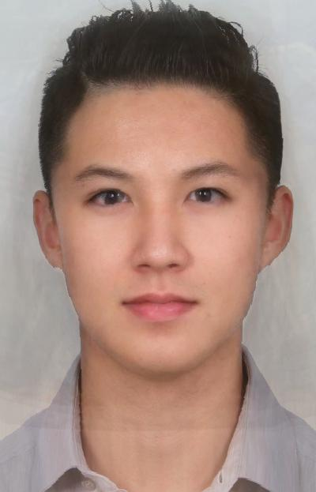

| Me | Sandy |
|---|
| My points | Sandy's points | My triangulation | Sandy's triangulation |
|---|
| Midway Face | Sequence |
|---|
| Male eigenface | female eigenface |
|---|
| Male | Female | Me |
|---|
| More Danish | Less Danish |
|---|
| Average male American face | Midway face | Sequence |
|---|
|  | ||
|---|---|---|
| Average female American face | Midway face | Sequence |